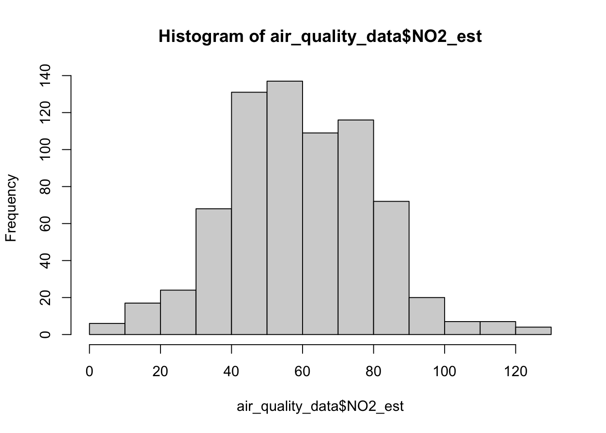
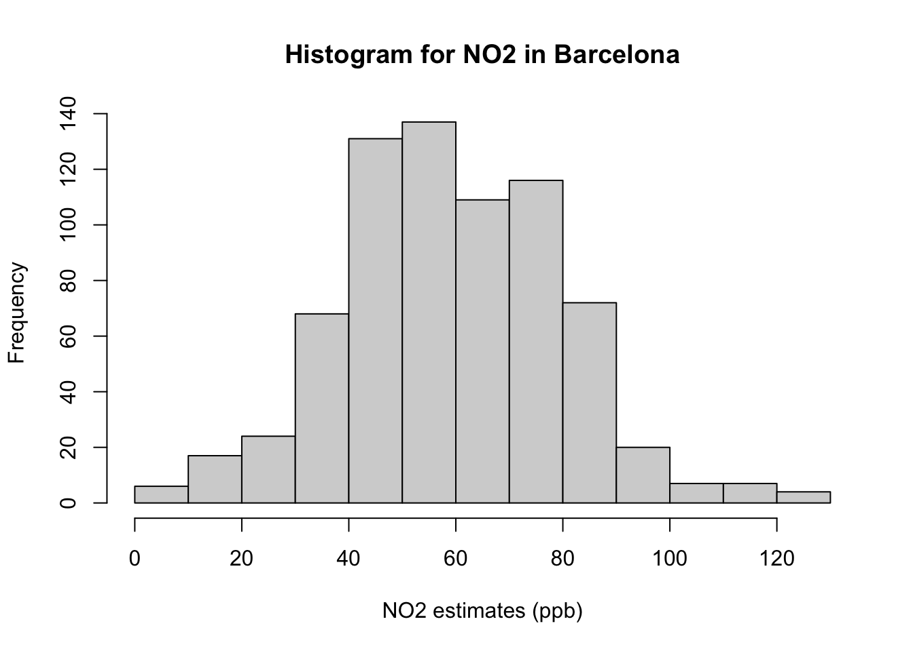
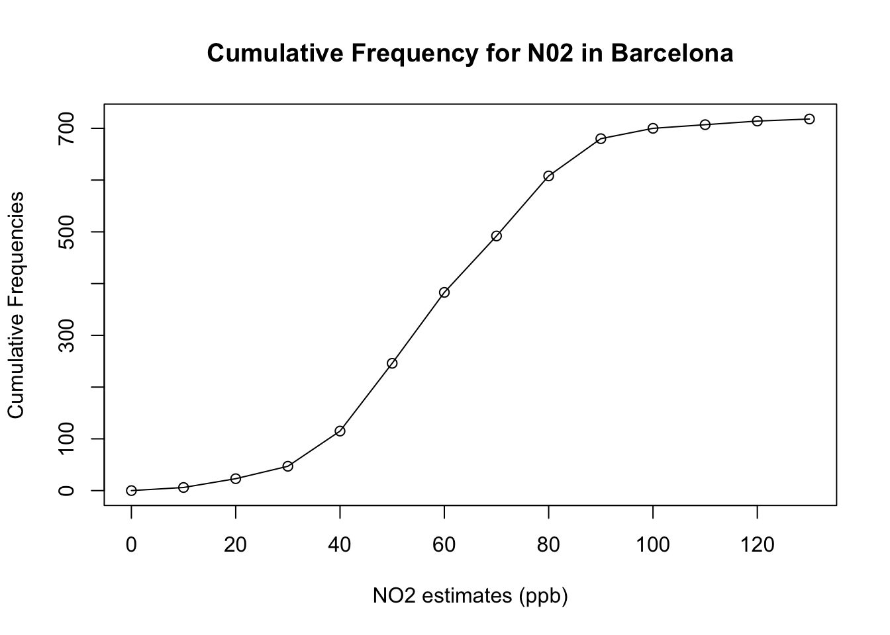
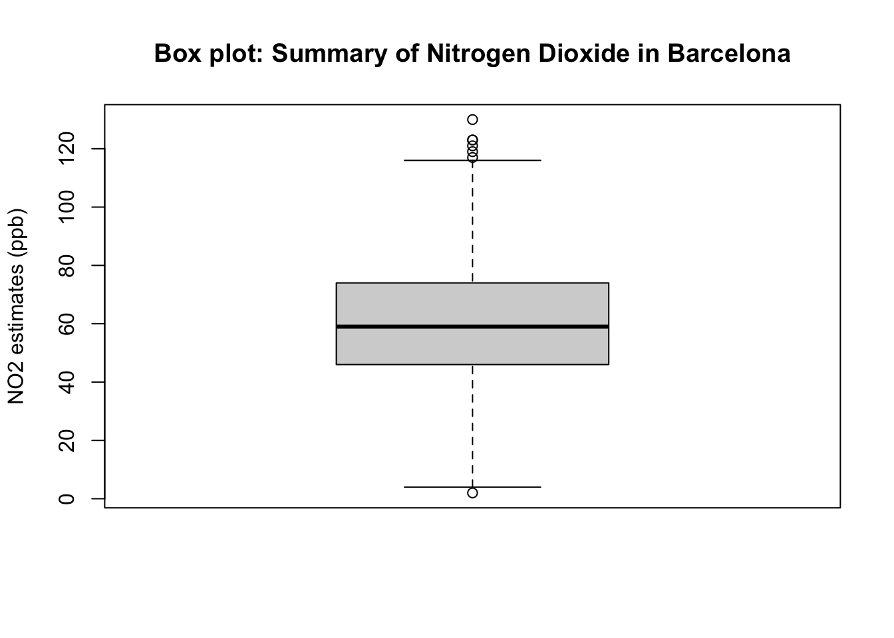

Part 3: Exploratory analysis in RStudio
What is statistics?
Definition: Statistics is a branch in the mathematical sciences that pertains to the collection, analysis, interpretation, and graphical presentation of data. The best thing about statistics is that it’s a highly applied branch of science which is applicable to many areas such as social science, politics, health (e.g., epidemiology), business & finance, environmental sciences and geography.
Statistics is broadly split into two main areas:
- Descriptive statistics, which focuses on describing the visible characteristics about a dataset
- Inferential statistics is more research-based, which focuses on making predictions (rather than stating facts) and testing hypothesis about a phenomenon.
We will focus on descriptive statistics as an introduction introducing everyone to the absolute basics. Descriptive statistics is all about knowing the data types and finding the distribution, central tendency and variability in such data set. These four key words may sound intimidating – but trust me – it is very easy!
Let us learn how to perform this in RStudio using the air pollution data for Barcelona.
Data types and variables
What is a variable?
Defintion: A variable is any characteristics, numbered value, or quantity that can be measured or counted. A variable can also be referred to a data Item. A variable can be broadly classified as discrete, continuous or categorical variable.
- Discrete variables contain data with countable items: e.g., number of crimes committed in London, number of students in a classroom, number of languages an individual can speak etc.,
- Continuous variables contains data with measurable items: e.g., Age (in years: 25, 57, 34 etc.,), monthly income (in £: 2399.58, £5559.89, £1,450.99 etc.,), height (in meters) or weight (in kg)
- Categorical variables contain categories or groups: e.g., gender (male or female), ethnicity (Asian, Black, Mixed, White etc.,); or employment status.
Let us import for following dataset Barcelona_Air_Pollution_data.csv into RStudio, and call this object air_ quality_data.
Remember - always make sure that your work directory is linked to your folder containing your data.
For Windows:
setwd("C:/Users/accountName/Desktop/GEOG0013/Workshop 1/")For Macs:
setwd("/Users/accountName/Desktop/GEOG0013/Workshop 1/")Now, import you the data set as follows:
air_quality_data <- read.csv("Barcelona_Air_Pollution_data.csv")You use the command View() see the full data viewer, or head() to see the first five rows of the dataset.
# see imported dataset
View(air_quality_data)head(air_quality_data)You will notice that the data contains six variables with the following information:
| Variable name | Variable Type | Information |
|---|---|---|
| Location | String/Text only | Name of location Eixample, Barcelona |
| ReadingDate | Date | Data collection date for air quality measures |
| NO2_est | Continuous | Measurements for Nitrogen dioxide (NO\(_2\)) (ppb) |
| NO2_category | Categorical | Health impacts (negligible/low/moderate/high) |
| PM10_est | Continuous | Measurements for Particulate matter (PM10) |
| PM10_category | Categorical | Health impacts (negligible/low/moderate) |
Important Notes: The NO2_est, for example, contains measurable items i.e., 718 observations for concentrations of ambient NO\(_2\) in Eixample area of Barcelona, and hence its a continuous variable. These estimates have been categorised in accordance with their health dangers i.e., negligible (\(<\) 10 ppb); low (11-50 ppb); moderate (51-100 ppb) and high (>101 pbb). The categories are contained in the variable NO2_category.
Let us begin to analyse NO2_est and NO2_category with frequency distributions
Frequency distributions
We use frequency distribution to analyse a set continuous data. In data handling in this context, there are two outputs generated:
- Frequency, which tells us how often a particular result was obtained. From this we can calculate a percentage value which is referred to as Relative Frequency.
- Cumulative Frequency, this is a cumulative sum of the frequencies, which indicates how often a result was obtained that is less than a stated value in our collection of data. Again, from this we can also calculate a cumulative percentage value which is referred to as Cumulative Relative Frequency.
Suppose, we want to assess the 718 observations for air pollutant Nitrogen Dioxide (NO\(_2\)).
Let’s list the observations for Nitrogen Dioxide (NO\(_2\)) in Barcelona:
air_quality_data$NO2_est## [1] 61 59 29 75 23 49 43 35 83 75 71 56 54 44 41 54 62 56
## [19] 26 42 71 86 85 52 56 45 68 86 69 71 4 82 43 51 114 43
## [37] 18 58 24 53 98 53 100 53 49 49 46 82 77 67 76 52 61 80
## [55] 77 70 56 49 42 73 64 33 71 72 13 37 26 46 84 72 65 76
## [73] 90 46 61 81 64 62 58 78 83 37 130 43 20 40 102 68 48 74
## [91] 52 43 80 71 42 84 44 121 41 66 44 50 38 75 41 45 48 63
## [109] 53 63 63 46 34 87 75 74 36 69 46 15 80 75 83 95 5 65
## [127] 21 84 68 32 45 73 53 31 85 91 73 46 25 75 70 84 68 65
## [145] 58 113 62 60 55 69 82 100 105 47 60 103 53 34 39 22 21 71
## [163] 85 56 73 61 24 44 47 49 100 64 91 79 42 32 33 84 43 61
## [181] 63 49 80 46 58 45 37 66 60 75 35 75 48 43 57 67 54 38
## [199] 22 51 69 51 64 32 20 52 42 65 69 47 40 34 34 51 57 43
## [217] 52 86 53 43 54 75 56 62 41 84 41 22 83 76 51 31 50 65
## [235] 76 77 61 50 75 49 47 65 78 39 51 49 75 45 50 69 86 75
## [253] 89 68 84 90 90 56 106 63 90 57 38 86 22 39 19 61 44 63
## [271] 52 42 46 56 40 69 62 42 54 17 49 84 34 89 65 53 78 67
## [289] 55 61 39 82 58 15 63 76 55 80 56 79 72 58 74 27 93 40
## [307] 40 58 79 81 123 84 37 87 38 49 91 50 59 69 57 68 53 38
## [325] 51 78 71 72 55 70 56 63 85 78 64 23 84 43 46 33 59 58
## [343] 47 64 68 89 76 86 116 52 34 63 40 41 72 87 37 62 38 68
## [361] 88 39 59 77 75 112 44 40 90 37 66 61 65 50 79 79 36 36
## [379] 12 86 40 62 63 71 53 30 44 76 41 62 77 80 62 86 37 48
## [397] 80 55 56 49 84 48 49 84 60 76 28 77 41 57 55 51 54 54
## [415] 11 43 38 86 30 23 78 29 80 16 48 90 44 42 50 54 45 42
## [433] 70 49 67 73 60 42 99 97 77 46 52 24 75 30 70 81 53 17
## [451] 63 59 44 41 67 56 58 111 43 47 49 58 36 72 36 103 63 77
## [469] 65 42 42 79 41 24 59 50 46 55 77 91 54 70 73 53 80 53
## [487] 72 67 95 57 87 39 73 56 34 56 75 74 72 42 119 55 43 69
## [505] 55 52 77 63 108 43 61 47 117 80 61 67 78 49 42 35 58 54
## [523] 36 84 56 72 70 40 59 71 56 49 66 52 48 60 54 73 66 67
## [541] 70 93 65 60 13 83 49 42 62 63 50 46 54 94 73 54 74 54
## [559] 10 71 41 17 75 55 54 54 83 47 49 90 76 89 83 43 76 67
## [577] 75 88 59 60 34 36 63 42 59 71 73 73 40 74 53 56 99 46
## [595] 46 64 37 20 84 86 47 57 54 56 78 73 65 72 37 57 38 46
## [613] 43 57 98 32 98 53 86 59 63 42 60 60 51 58 59 83 67 42
## [631] 74 62 84 67 49 76 2 44 51 69 69 87 49 18 73 66 81 78
## [649] 82 69 50 36 71 60 7 50 49 60 55 25 58 76 69 61 88 45
## [667] 59 59 91 61 81 81 83 71 108 99 46 69 38 54 59 16 75 81
## [685] 35 63 65 71 57 53 58 37 39 43 64 76 56 72 87 74 74 77
## [703] 46 87 53 60 47 10 61 35 36 60 71 45 47 79 37 123In a list format it is quite difficult to make head or tail on what observations appear frequently and its distribution. To summarise this - it will be helpful to classify the information into Classes and then obtain the Frequency and Cumulative Frequency in a table. We call this table a Frequency Table.
The minimum value for NO\(_2\) is 2 and the maximum is 130. We can group the 718 observations into 13 classes using an interval of 10s e.g., 1-10, 11-20, 21-30, 31-40, 41-50, 51-60, 61-70, 71-80, 81-90, 91-100, 101-110, 111-120 and 121-130
Important Notes: The way and manner you specify the classes and interval are up to you really. Here, 10 is being used for convenience.
The interval width is 10, we can generate sequence of number from 0 to 130, inclusively, to create the classes which in turn be used to group the 718 observations into 13 classes using the seq() and cut().
For example:
# using starting value as 0
# using highest value as 130
# using interval as 10
# specify in this order the lower, highest, interval value in seq() function
classes <- seq(0, 130, 10)
classes## [1] 0 10 20 30 40 50 60 70 80 90 100 110 120 130The sequence of values are stored in the object called classes. Now, let us apply the cut() function to group the NO\(_2\) data accordingly. We can do this by generating a new variable called Groups.
# tell the cut() function to group NO2_est using the classes object
air_quality_data$Groups <- cut(air_quality_data$NO2_est, breaks=classes)
air_quality_data$Groups## [1] (60,70] (50,60] (20,30] (70,80] (20,30] (40,50] (40,50]
## [8] (30,40] (80,90] (70,80] (70,80] (50,60] (50,60] (40,50]
## [15] (40,50] (50,60] (60,70] (50,60] (20,30] (40,50] (70,80]
## [22] (80,90] (80,90] (50,60] (50,60] (40,50] (60,70] (80,90]
## [29] (60,70] (70,80] (0,10] (80,90] (40,50] (50,60] (110,120]
## [36] (40,50] (10,20] (50,60] (20,30] (50,60] (90,100] (50,60]
## [43] (90,100] (50,60] (40,50] (40,50] (40,50] (80,90] (70,80]
## [50] (60,70] (70,80] (50,60] (60,70] (70,80] (70,80] (60,70]
## [57] (50,60] (40,50] (40,50] (70,80] (60,70] (30,40] (70,80]
## [64] (70,80] (10,20] (30,40] (20,30] (40,50] (80,90] (70,80]
## [71] (60,70] (70,80] (80,90] (40,50] (60,70] (80,90] (60,70]
## [78] (60,70] (50,60] (70,80] (80,90] (30,40] (120,130] (40,50]
## [85] (10,20] (30,40] (100,110] (60,70] (40,50] (70,80] (50,60]
## [92] (40,50] (70,80] (70,80] (40,50] (80,90] (40,50] (120,130]
## [99] (40,50] (60,70] (40,50] (40,50] (30,40] (70,80] (40,50]
## [106] (40,50] (40,50] (60,70] (50,60] (60,70] (60,70] (40,50]
## [113] (30,40] (80,90] (70,80] (70,80] (30,40] (60,70] (40,50]
## [120] (10,20] (70,80] (70,80] (80,90] (90,100] (0,10] (60,70]
## [127] (20,30] (80,90] (60,70] (30,40] (40,50] (70,80] (50,60]
## [134] (30,40] (80,90] (90,100] (70,80] (40,50] (20,30] (70,80]
## [141] (60,70] (80,90] (60,70] (60,70] (50,60] (110,120] (60,70]
## [148] (50,60] (50,60] (60,70] (80,90] (90,100] (100,110] (40,50]
## [155] (50,60] (100,110] (50,60] (30,40] (30,40] (20,30] (20,30]
## [162] (70,80] (80,90] (50,60] (70,80] (60,70] (20,30] (40,50]
## [169] (40,50] (40,50] (90,100] (60,70] (90,100] (70,80] (40,50]
## [176] (30,40] (30,40] (80,90] (40,50] (60,70] (60,70] (40,50]
## [183] (70,80] (40,50] (50,60] (40,50] (30,40] (60,70] (50,60]
## [190] (70,80] (30,40] (70,80] (40,50] (40,50] (50,60] (60,70]
## [197] (50,60] (30,40] (20,30] (50,60] (60,70] (50,60] (60,70]
## [204] (30,40] (10,20] (50,60] (40,50] (60,70] (60,70] (40,50]
## [211] (30,40] (30,40] (30,40] (50,60] (50,60] (40,50] (50,60]
## [218] (80,90] (50,60] (40,50] (50,60] (70,80] (50,60] (60,70]
## [225] (40,50] (80,90] (40,50] (20,30] (80,90] (70,80] (50,60]
## [232] (30,40] (40,50] (60,70] (70,80] (70,80] (60,70] (40,50]
## [239] (70,80] (40,50] (40,50] (60,70] (70,80] (30,40] (50,60]
## [246] (40,50] (70,80] (40,50] (40,50] (60,70] (80,90] (70,80]
## [253] (80,90] (60,70] (80,90] (80,90] (80,90] (50,60] (100,110]
## [260] (60,70] (80,90] (50,60] (30,40] (80,90] (20,30] (30,40]
## [267] (10,20] (60,70] (40,50] (60,70] (50,60] (40,50] (40,50]
## [274] (50,60] (30,40] (60,70] (60,70] (40,50] (50,60] (10,20]
## [281] (40,50] (80,90] (30,40] (80,90] (60,70] (50,60] (70,80]
## [288] (60,70] (50,60] (60,70] (30,40] (80,90] (50,60] (10,20]
## [295] (60,70] (70,80] (50,60] (70,80] (50,60] (70,80] (70,80]
## [302] (50,60] (70,80] (20,30] (90,100] (30,40] (30,40] (50,60]
## [309] (70,80] (80,90] (120,130] (80,90] (30,40] (80,90] (30,40]
## [316] (40,50] (90,100] (40,50] (50,60] (60,70] (50,60] (60,70]
## [323] (50,60] (30,40] (50,60] (70,80] (70,80] (70,80] (50,60]
## [330] (60,70] (50,60] (60,70] (80,90] (70,80] (60,70] (20,30]
## [337] (80,90] (40,50] (40,50] (30,40] (50,60] (50,60] (40,50]
## [344] (60,70] (60,70] (80,90] (70,80] (80,90] (110,120] (50,60]
## [351] (30,40] (60,70] (30,40] (40,50] (70,80] (80,90] (30,40]
## [358] (60,70] (30,40] (60,70] (80,90] (30,40] (50,60] (70,80]
## [365] (70,80] (110,120] (40,50] (30,40] (80,90] (30,40] (60,70]
## [372] (60,70] (60,70] (40,50] (70,80] (70,80] (30,40] (30,40]
## [379] (10,20] (80,90] (30,40] (60,70] (60,70] (70,80] (50,60]
## [386] (20,30] (40,50] (70,80] (40,50] (60,70] (70,80] (70,80]
## [393] (60,70] (80,90] (30,40] (40,50] (70,80] (50,60] (50,60]
## [400] (40,50] (80,90] (40,50] (40,50] (80,90] (50,60] (70,80]
## [407] (20,30] (70,80] (40,50] (50,60] (50,60] (50,60] (50,60]
## [414] (50,60] (10,20] (40,50] (30,40] (80,90] (20,30] (20,30]
## [421] (70,80] (20,30] (70,80] (10,20] (40,50] (80,90] (40,50]
## [428] (40,50] (40,50] (50,60] (40,50] (40,50] (60,70] (40,50]
## [435] (60,70] (70,80] (50,60] (40,50] (90,100] (90,100] (70,80]
## [442] (40,50] (50,60] (20,30] (70,80] (20,30] (60,70] (80,90]
## [449] (50,60] (10,20] (60,70] (50,60] (40,50] (40,50] (60,70]
## [456] (50,60] (50,60] (110,120] (40,50] (40,50] (40,50] (50,60]
## [463] (30,40] (70,80] (30,40] (100,110] (60,70] (70,80] (60,70]
## [470] (40,50] (40,50] (70,80] (40,50] (20,30] (50,60] (40,50]
## [477] (40,50] (50,60] (70,80] (90,100] (50,60] (60,70] (70,80]
## [484] (50,60] (70,80] (50,60] (70,80] (60,70] (90,100] (50,60]
## [491] (80,90] (30,40] (70,80] (50,60] (30,40] (50,60] (70,80]
## [498] (70,80] (70,80] (40,50] (110,120] (50,60] (40,50] (60,70]
## [505] (50,60] (50,60] (70,80] (60,70] (100,110] (40,50] (60,70]
## [512] (40,50] (110,120] (70,80] (60,70] (60,70] (70,80] (40,50]
## [519] (40,50] (30,40] (50,60] (50,60] (30,40] (80,90] (50,60]
## [526] (70,80] (60,70] (30,40] (50,60] (70,80] (50,60] (40,50]
## [533] (60,70] (50,60] (40,50] (50,60] (50,60] (70,80] (60,70]
## [540] (60,70] (60,70] (90,100] (60,70] (50,60] (10,20] (80,90]
## [547] (40,50] (40,50] (60,70] (60,70] (40,50] (40,50] (50,60]
## [554] (90,100] (70,80] (50,60] (70,80] (50,60] (0,10] (70,80]
## [561] (40,50] (10,20] (70,80] (50,60] (50,60] (50,60] (80,90]
## [568] (40,50] (40,50] (80,90] (70,80] (80,90] (80,90] (40,50]
## [575] (70,80] (60,70] (70,80] (80,90] (50,60] (50,60] (30,40]
## [582] (30,40] (60,70] (40,50] (50,60] (70,80] (70,80] (70,80]
## [589] (30,40] (70,80] (50,60] (50,60] (90,100] (40,50] (40,50]
## [596] (60,70] (30,40] (10,20] (80,90] (80,90] (40,50] (50,60]
## [603] (50,60] (50,60] (70,80] (70,80] (60,70] (70,80] (30,40]
## [610] (50,60] (30,40] (40,50] (40,50] (50,60] (90,100] (30,40]
## [617] (90,100] (50,60] (80,90] (50,60] (60,70] (40,50] (50,60]
## [624] (50,60] (50,60] (50,60] (50,60] (80,90] (60,70] (40,50]
## [631] (70,80] (60,70] (80,90] (60,70] (40,50] (70,80] (0,10]
## [638] (40,50] (50,60] (60,70] (60,70] (80,90] (40,50] (10,20]
## [645] (70,80] (60,70] (80,90] (70,80] (80,90] (60,70] (40,50]
## [652] (30,40] (70,80] (50,60] (0,10] (40,50] (40,50] (50,60]
## [659] (50,60] (20,30] (50,60] (70,80] (60,70] (60,70] (80,90]
## [666] (40,50] (50,60] (50,60] (90,100] (60,70] (80,90] (80,90]
## [673] (80,90] (70,80] (100,110] (90,100] (40,50] (60,70] (30,40]
## [680] (50,60] (50,60] (10,20] (70,80] (80,90] (30,40] (60,70]
## [687] (60,70] (70,80] (50,60] (50,60] (50,60] (30,40] (30,40]
## [694] (40,50] (60,70] (70,80] (50,60] (70,80] (80,90] (70,80]
## [701] (70,80] (70,80] (40,50] (80,90] (50,60] (50,60] (40,50]
## [708] (0,10] (60,70] (30,40] (30,40] (50,60] (70,80] (40,50]
## [715] (40,50] (70,80] (30,40] (120,130]
## 13 Levels: (0,10] (10,20] (20,30] (30,40] (40,50] (50,60] (60,70] ... (120,130]The observations have now been grouped to the classes. You can see this explicitly in the data viewer:
View(air_quality_data)Important Notes: What have we done here? The first value under the NO2_est column is 61, this value falls between 61-70 and hence under the Group column is was classed into the (61,70] interval by the cut() function. The second value in NO2_est is 59, and hence it was classed into the (51,60] interval, and so on.
Computing the Frequency Distribution table
We can now generate our frequency table and hence determine frequency and cumulative frequency of the ambient levels of NO\(_2\) in Eixample. We perform by using the table() function to tabulate the frequency of values that were grouped within an interval using the Group column.
table(air_quality_data$Groups)##
## (0,10] (10,20] (20,30] (30,40] (40,50] (50,60] (60,70] (70,80]
## 6 17 24 68 131 137 109 116
## (80,90] (90,100] (100,110] (110,120] (120,130]
## 72 20 7 7 4Using table() function only shows results in the Console - lets store the table results in a data frame object and call it frequency_results:
frequency_results <- data.frame(table(air_quality_data$Groups))
frequency_results## Var1 Freq
## 1 (0,10] 6
## 2 (10,20] 17
## 3 (20,30] 24
## 4 (30,40] 68
## 5 (40,50] 131
## 6 (50,60] 137
## 7 (60,70] 109
## 8 (70,80] 116
## 9 (80,90] 72
## 10 (90,100] 20
## 11 (100,110] 7
## 12 (110,120] 7
## 13 (120,130] 4You can see column names Var1 and Freq. The Var1 is the original Groups columns which incidentally been renamed to Var1. The Freq column was generated from the table() function. We can rename the 1st and 2nd columns using colnames().
# rename first column t9 "Groups"
# rename second column to "Frequency"
# print new variable names in console using names() function
colnames(frequency_results)[1] <- "Groups"
colnames(frequency_results)[2] <- "Frequency"
names(frequency_results) ## [1] "Groups" "Frequency"frequency_results## Groups Frequency
## 1 (0,10] 6
## 2 (10,20] 17
## 3 (20,30] 24
## 4 (30,40] 68
## 5 (40,50] 131
## 6 (50,60] 137
## 7 (60,70] 109
## 8 (70,80] 116
## 9 (80,90] 72
## 10 (90,100] 20
## 11 (100,110] 7
## 12 (110,120] 7
## 13 (120,130] 4Finally, we derive the relative frequency i.e., a percentage that is derived by dividing each frequency value from a group by the total number of observations (i.e., in this case: 718). We can add the relativeFreq column to the frequency_results table.
# generate a new column
frequency_results$relativeFreq <- frequency_results$Frequency/718Interpretation of frequency: The above table output show the frequency distribution of a set of concentrations for Nitrogen Dioxide measured in Eixample (in Barcelona). The group with the highest frequency value is 50-60ppb (i.e., 137) which accounts for 0.1908 (19.08%) of the data. These measurements typically fall under the category that’s considered to cause moderate harm to humans.
Let’s add the cumulative frequency and cumulative relative frequency i.e., percentage using this code below:
# add cumulativeFreq column to the data frame by adding Frequency using cumsum() function
frequency_results$cumulativeFreq <- cumsum(frequency_results$Frequency)
# add cumulativeRelFreq column to the data frame by adding Frequency using cumsum() function
frequency_results$cumulativeRelFreq <- cumsum(frequency_results$relativeFreq)
# print table results
frequency_results## Groups Frequency relativeFreq cumulativeFreq cumulativeRelFreq
## 1 (0,10] 6 0.008356546 6 0.008356546
## 2 (10,20] 17 0.023676880 23 0.032033426
## 3 (20,30] 24 0.033426184 47 0.065459610
## 4 (30,40] 68 0.094707521 115 0.160167131
## 5 (40,50] 131 0.182451253 246 0.342618384
## 6 (50,60] 137 0.190807799 383 0.533426184
## 7 (60,70] 109 0.151810585 492 0.685236769
## 8 (70,80] 116 0.161559889 608 0.846796657
## 9 (80,90] 72 0.100278552 680 0.947075209
## 10 (90,100] 20 0.027855153 700 0.974930362
## 11 (100,110] 7 0.009749304 707 0.984679666
## 12 (110,120] 7 0.009749304 714 0.994428969
## 13 (120,130] 4 0.005571031 718 1.000000000Interpretation of cumulative frequency: The above table output show the cumulative frequency distribution ambient concentrations for Nitrogen Dioxide measured in Eixample (in Barcelona). We can see that there are 246 measurements or less with N0\(_2\) concentrations to be considered as negligible or low impact to health (<50ppb). This corresponds to 0.3426 (34.26%) of the data.
Conversely, we can also say - we can see that there are 472 measurements with N0\(_2\) concentrations more than 50ppb which is considered to be moderate or high impact to human health. This corresponds to 0.6573 (65.73%) of the data.
Graphical representation of frequency data
The frequency table for frequencies and cumulative frequencies can be graphical represented in a form of histogram and frequency diagram respectively. Now, we need the data must be in its original form (i.e., not grouped) to plot the histogram, and we will need to use the classes object which we created earlier on from the seq() function so as to use as breaks in the hist() plot function:
hist(air_quality_data$NO2_est, breaks = classes)
The above graph is not publication-worthy. It is missing key details such as the title and label for the x-axis. Let’s apply some cosmetics such as a main title and label for the x-axis
hist(air_quality_data$NO2_est, breaks = classes, main = "Histogram for NO2 in Barcelona", xlab = "NO2 estimates (ppb)")
Interpretation of histogram: The above figure output describes the shape for ambient measures of NO\(_2\) in Barcelona which appears bell-shaped centered around 60ppb. Note that the frequency bars in this graph are essentially the same as the frequency values in the table.
Lastly, we then compute its cumulative frequency with cumsum() to support the interpretation. The coding needs a bit of hacking because we need to force a starting zero element for this graph to work.
cumfreq0 <- c(0, cumsum(frequency_results$Frequency))
plot(classes, cumfreq0, main="Cumulative Frequency for N02 in Barcelona", xlab="NO2 estimates (ppb)", ylab="Cumulative Frequencies")
lines(classes, cumfreq0) 
Descriptive and central tendency measures
We have used frequency distribution to describe the distribution about the data for air pollution in Barcelona. The description is at face-value though. Central tendency measures contains a list of summary measurements that allows the user to summarize the data to some central measure and to gauge the spread of the data (i.e., errors/departures from central measure). It is best for continuous variables, we can hence compute the following summary measurements (watch video see to definitions):
- Mean
- Median
- Standard deviation
- Minimum and Maximum values
- Quartiles (or Interquartile ranges)
To compute the summary statistics rapidly – simply use the summary() function on the variable of interest (i.e., NO2_est from the original dataset).
# compute all descriptive summaries measurements
summary(air_quality_data$NO2_est)## Min. 1st Qu. Median Mean 3rd Qu. Max.
## 2.00 46.00 59.00 59.69 74.00 130.00As you can see using summary() automatically gives you almost all the summary estimates needed for interpretation. The NO\(_2\) air levels in Barcelona was 59.69ppb (with median 59.00pbb). The lowest and highest values are 2.0ppb and 130.0ppb, respectively (with 25th and 75th percentiles being 46.00ppb and 74.00pbb, respectively.) Finally, you can compute the standard deviation using the sd() function as follows for income:
# compute all descriptive summaries measurements
sd(air_quality_data$NO2_est)## [1] 20.60876The standard deviation is ± 20.61pbb – this is the error around the mean of NO\(_2\) i.e., estimated as 59.69ppb. To visualise the distribution of a continuous variable – your ‘go-to’ plot is a boxplot. You can use the function boxplot() to generate one. Type the following to churn it:
# Box plot
boxplot(air_quality_data$NO2_est, ylab = "NO2 estimates (ppb)", main="Box plot: Summary of Nitrogen Dioxide in Barcelona")
Descriptive Interpretation of results: